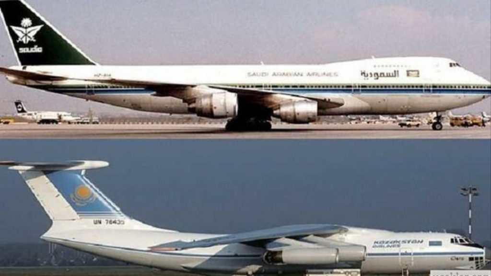
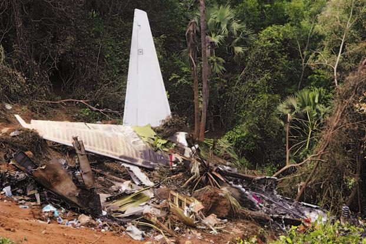
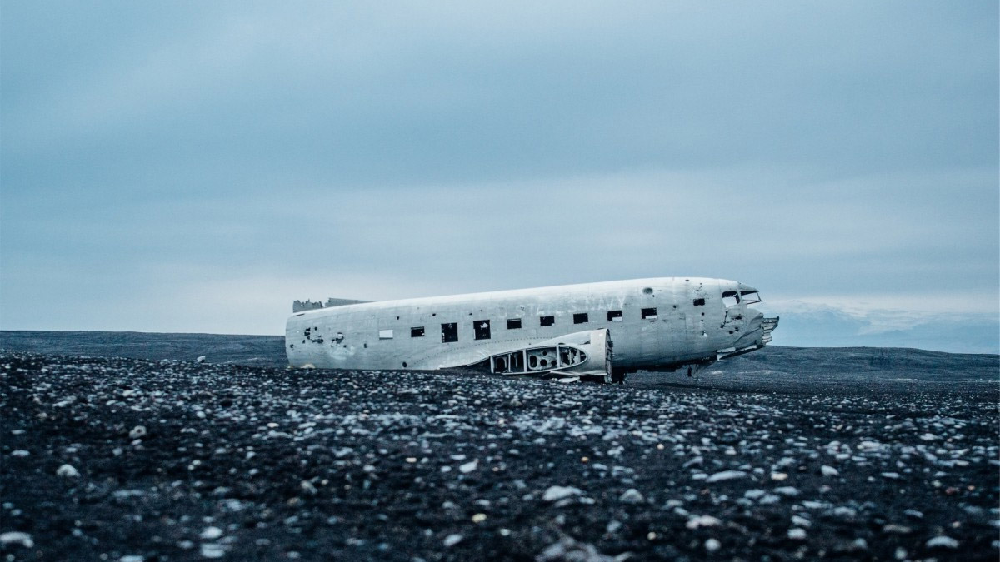
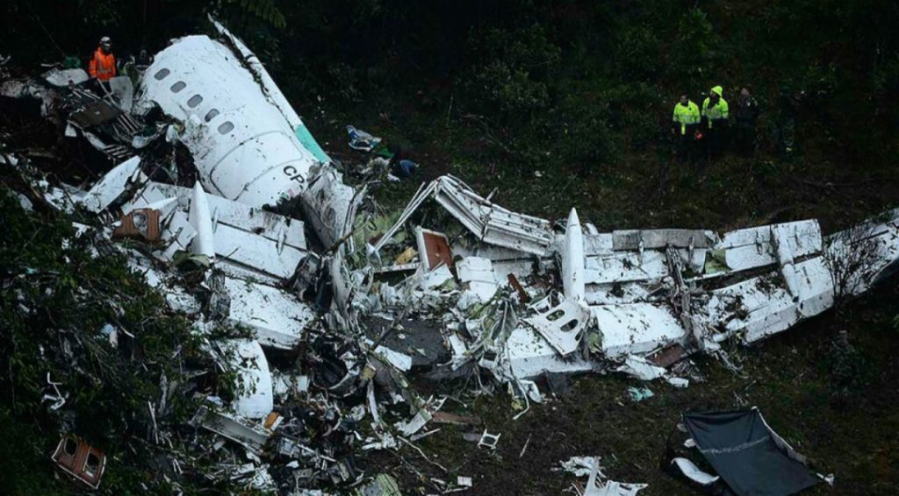
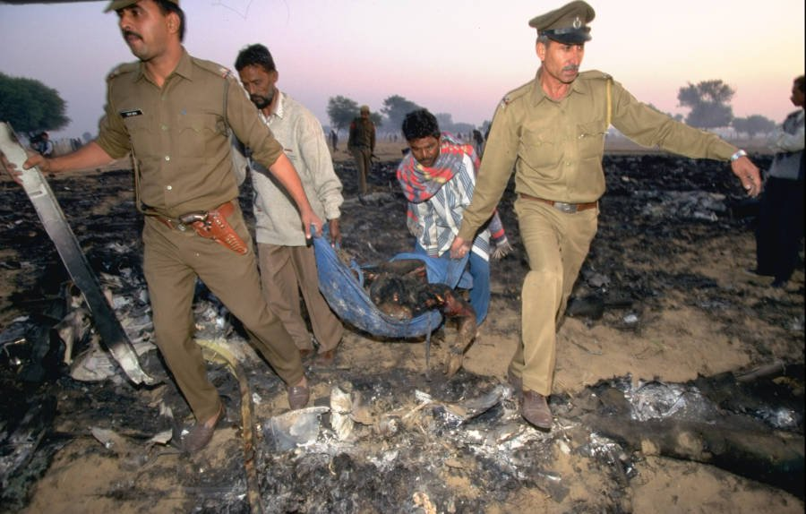
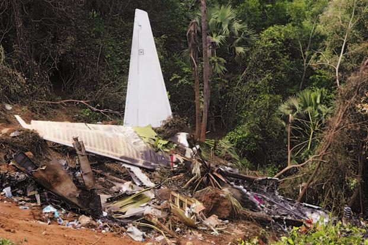
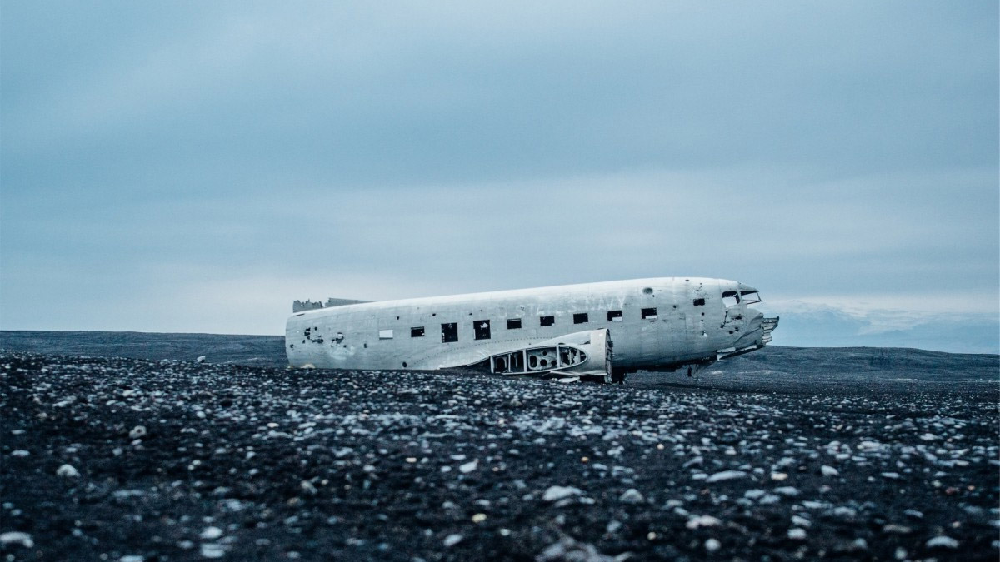
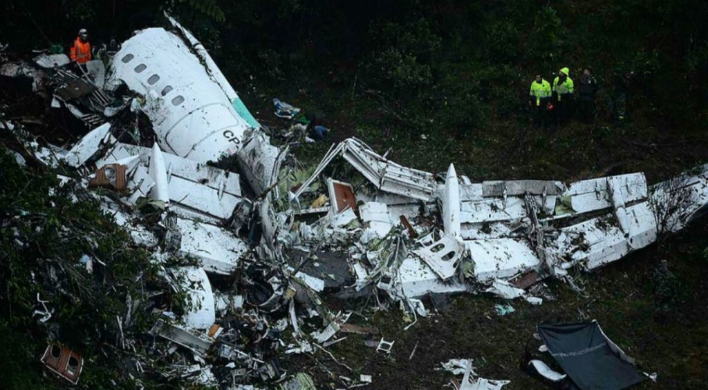
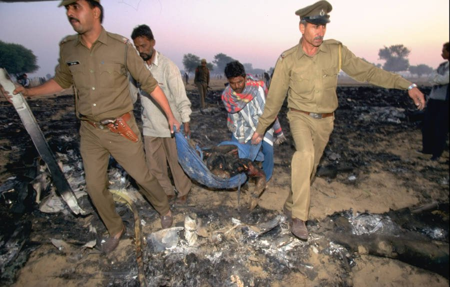

CHARKİ DADRİ HAVA ÇARPIŞMASI
12 Kasım 1996'da, Hindistan'ın başkenti Yeni Delhi'nin batısındaki Charkhi Dadri köyünün üzerinde Suudi Arabistan Hava Yolları'na ait bir Boeing 747-100B ile Kazakistan Hava Yolları'na ait Ilyushin Il-76 gökyüzünde çarpıştı. Kurtulanın olmadığı çarpışmada, toplam 349 yolcu hayatını kaybetti.
Kazaya Karışan Uçaklar
Saudi Arabian Airlines Flight 763, HZ-AIH tescilli bir Boeing 747-168B idi ve 312 kişiyle planlanmış uluslararası Delhi-Dhahran-Cidde yolcu servisinin bir parçası olarak Delhi'den kalkıyordu. Bu uçuştaki mürettebat, Kaptan Khalid Al-Shubaily, Birinci Subay Nazir Khan ve Uçuş Mühendisi Ahmed S. Edrees'ten oluşuyordu. Al-Shubaily, 9.837 uçuş saatine sahip deneyimli bir pilottu.
763 sefer sayılı uçağın yolcularının uyrukları konusunda bazı anlaşmazlıklar bulunmaktadır. 14 Kasım 1996'da yayınlanan bir makaleye göre, çoğu Suudi Arabistan'da mavi yakalı işçi olarak çalışan 215 Hintli ve 40 Nepalli ve 215 Hintli uçağa binmişti. üç Amerikalı. Ancak farklı bir makaleye göre yolcu manifestosunda dokuz Nepalli, üç Pakistanlı, iki Amerikalı, bir Bangladeşli, bir İngiliz ve bir Suudi Arabistanlı olmak üzere diğer milletlerden 17 kişi yer alıyordu. Mürettebattan beşi terörle mücadele yetkilisi olmak üzere 12'si Suudi Arabistan vatandaşıydı.
Kazakistan Havayolları Uçuş 1907, UN-76435 tescilli bir Ilyushin Il-76TD, Çimkent Havaalanından Delhi'ye charter seferindeydi. Mürettebat, Kaptan Alexander Robertovich Cherepanov , Birinci Subay Ermek Kozhahmetovich Dzhangirov, Uçuş Mühendisi Alexander Alexanderovich Chuprov, Navigatör Zhahanbek Duisenovich Aripbaev ve Telsiz Operatörü Egor Alekseevich Repp'ten oluşuyordu. Cherepanov, 9.229 uçuş saati ile oldukça deneyimliydi.
Uçuşu Kırgızistan'dan bir şirket kiraladı ve yolcu listesinde çoğunlukla Hindistan'da alışveriş yapmayı planlayan etnik Rus Kırgız vatandaşları yer alıyordu. Uçağa 13 Kırgız tüccar bindi.

Çarpışma
SVA Uçuş 763, Delhi'den yerel saatle 18:32'de ayrıldı. KZA Flight 1907, Delhi'ye inmek için eş zamanlı olarak alçalıyordu. Her iki uçuş da yaklaşma kontrolörü V.K. tarafından kontrol edildi. Dutta. Kalkıştan hemen sonra, SVA uçuşu 10.000 fit başlangıç yüksekliğine kadar serbest bırakıldı. Saat 18: 34'te Dutta, KZA uçağının, hedef havaalanının işaretçisinden 74 deniz mili uzaktayken 15.000 fit'e alçalmasını sağladı. İki dakika sonra, 18:36'da Dutta, 14.000 feet'e tırmanmak için aynı hava yolunda ancak ters yönde seyahat ederek SVA uçağından ayrıldı. Saat 18:38'de SVA mürettebatı 14.000 feet'e ulaştığını bildirdi ve daha yüksek bir seviye talep etti. Dutta onlara irtifalarını korumalarını ve beklemede kalmalarını söyledi ve Birinci Subay Khan buna şöyle cevap verdi: "Suudi 763 bir dört sıfırı koruyacak."
Saat 18:39'da, KZA uçuşu kendisine tahsis edilen 15.000 feet yüksekliğe ulaştığını bildirdi, ancak aslında daha yüksekti, 16.348 feet idi ve hala alçalıyordu. Bu sırada Dutta, uçuşa şu tavsiyede bulundu: "Trafiğin saat 12 yönünde, karşılıklı olduğu, Suudi Boeing 747'nin on mil hızla, beş mil daha geçmesi muhtemel. Görüş alanınızdaysa rapor edin."Telsiz Operatörü Repp açıklama talep etti, Dutta buna yanıt verdi: "Trafik... sekiz mil uzakta, 140. seviyede."Repp güncellemeyi kabul etti ve "Şimdi 1907'ye bakıyoruz" diye imzaladı.
Bir dakikadan kısa bir süre sonra, saat 18.40'ta, iniş yapan bir USAF kargo uçağı, saat iki konumunda "büyük bir patlama" gördüklerini söylemek için çağrıda bulundu. Dutta, SVA ve KZA uçuşlarıyla bağlantı kurmaya çalıştı ancak yanıt alamadı. İki uçak çarpıştı, KZA uçuşunun sol kanadı SVA 747'nin sol kanadını keserken, 747'nin sol yatay stabilizatörü KZA uçuşunun dikey stabilizatörünü kesmişti. Sakat Suudi Boeing hızla kontrolü kaybetti ve kanattan gelen ateşle birlikte hızla alçalan bir spirale girdi ve uçak, 1.135 km/saat gibi neredeyse süpersonik bir hızla yere çarpmadan önce havada parçalandı. Sol kanadının ve dikey stabilizatörünün büyük bir kısmı kaybolan Ilyushin, düz bir dönüş yaptı ve Suudi uçağının enkazının yakınında düz bir konumda bir alana çarptı. SVA763 gemisindeki 312 kişinin tamamı ve KZA1907 gemisindeki 37 kişinin tamamı öldü.
Çarpışma Delhi'nin yaklaşık 100 kilometre batısında gerçekleşti.Suudi Arabistan uçağının enkazı Haryana'nın Bhiwani Bölgesi, Dhani köyü yakınlarına indi. Kazak uçağının enkazı Haryana'nın Rohtak ilçesine bağlı Birohar köyü yakınlarında yere düştü.
Kazanın Simlasyonunu İzlemek İsterseniz Aşağıdaki Videoyu İzleyebilirsiniz!
Kaza Sonrası
Havalimanında yer alan tek radar yüzünden uçakların irtifalarını göremeyen kontrolörler, pilotların verdikleri bilgileri kağıtlara yazarak not tutuyorlardı. Aslında o yıllarda, irtifa bilgisi sağlayan radar teknolojisi birçok havalimanında kullanılıyordu. Yeni Delhi Havalimanı yönetimi de bu radarı çoktan satın almıştı.
Planlamalara göre kaza tarihinden tam iki hafta önce radarın takılmış olması gerekiyordu. Eğer bu sistem kurulmuş olsaydı, hava trafik kontrolörü uçakların hareketlerini görebilecek, onları erkenden uyaracak ve bir faciayı önlemiş olacaktı.
Hatalar zincirine eklenen bir diğer halka ise uçaklarda yer alması gereken TCAS uyarı sisteminin olmamasıydı. Bu nedenle pilotlar, karşıdan gelen uçak hakkında hiçbir fikirleri olmadan uçmaya devam ettiler.
Yaşanan bu trajediden sonra Yeni Delhi havalimanına ikinci radar sistemi kuruldu. TCAS sistemi neredeyse bütün uçaklarda zorunlu hale getirildi. Ekiplerin birbirleri ile iletişim problemi yaşamamaları adına dil konusundaki eğitimler ve zorunluluklar arttırıldı.
Detaylı Kaza İncelemesi!
Fotoğraf Galerisi
 






